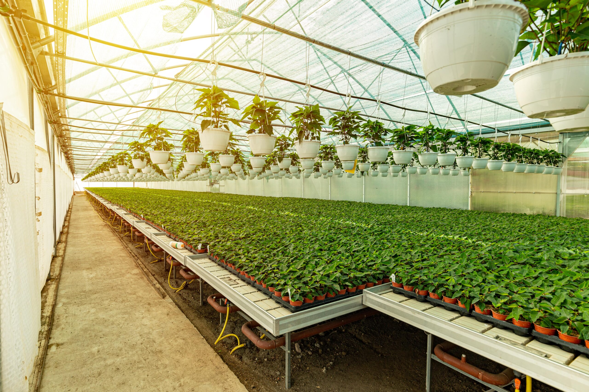
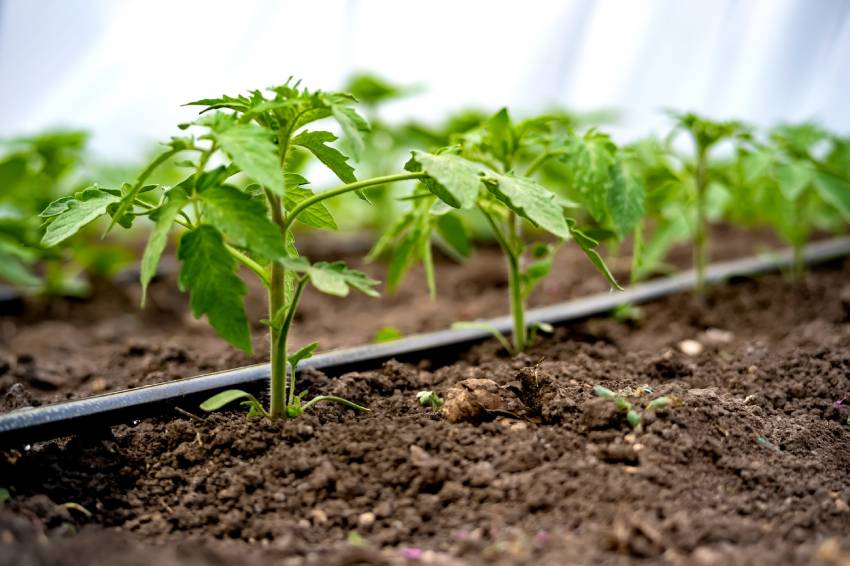
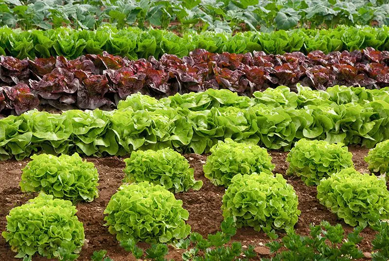
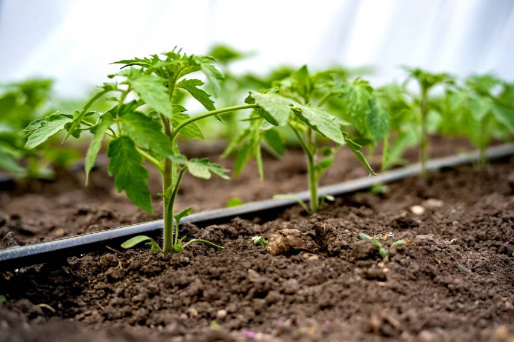
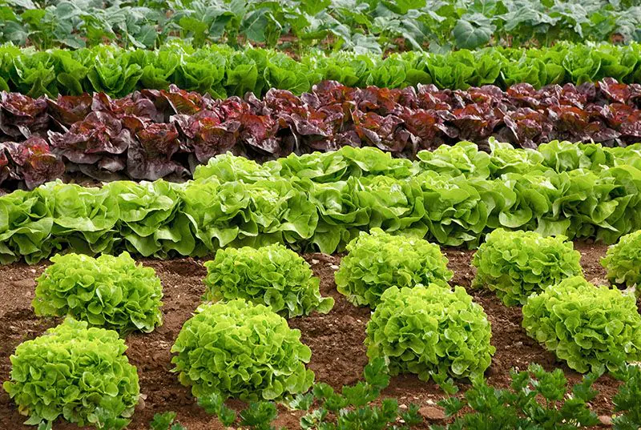
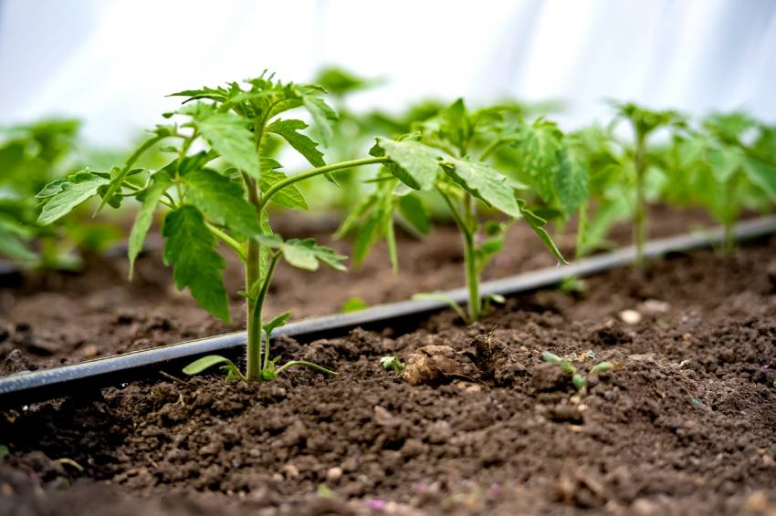
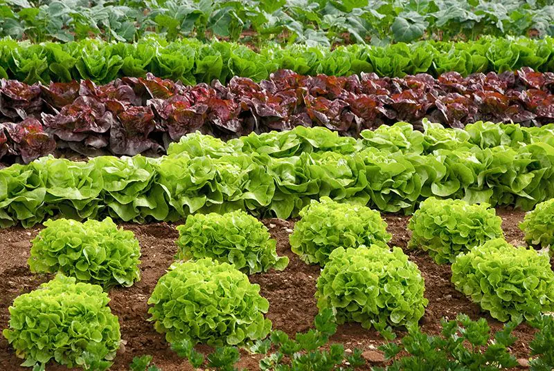

Una forma inteligente y sostenible de cultivar en casa
¿Qué es una huerta automatizada?
huerta automatizada es un sistema de cultivo que utiliza tecnología para controlar factores como el riego
la luz, la temperatura y la humedad. Esto permite cultivar frutas, verduras y hierbas de manera eficiente y con menos esfuerzo.



beneficios
de agua mediante riego por sensores
Producción constante de alimentos frescos.
Menor mantenimiento diario
Ideal para personas con poco tiempo o experiencia en jardinería
¿Cómo cuidarla?
Aunque es automatizada, la huerta necesita atención ocasional:
Revisar sensores y sistemas de riego periódicamente.
Reponer nutrientes en el suelo o en el sistema hidropónico.
Podar las plantas cuando sea necesario.
Controlar plagas y enfermedades de forma natural o con productos ecológicos.
Conclusión
Una huerta automatizada es una excelente opción para quienes buscan cultivar sus propios alimentos
de forma práctica y sostenible. Con un poco de mantenimiento y tecnología, puedes disfrutar de productos
frescos durante todo el año

 


